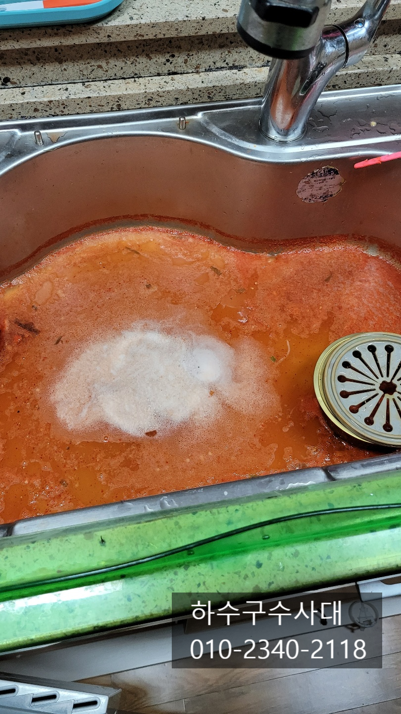
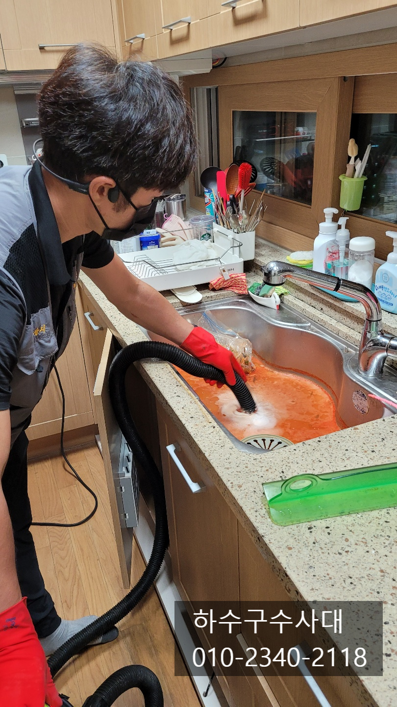
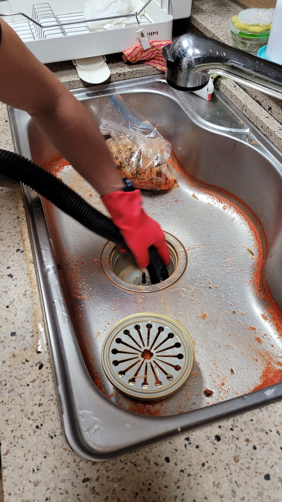
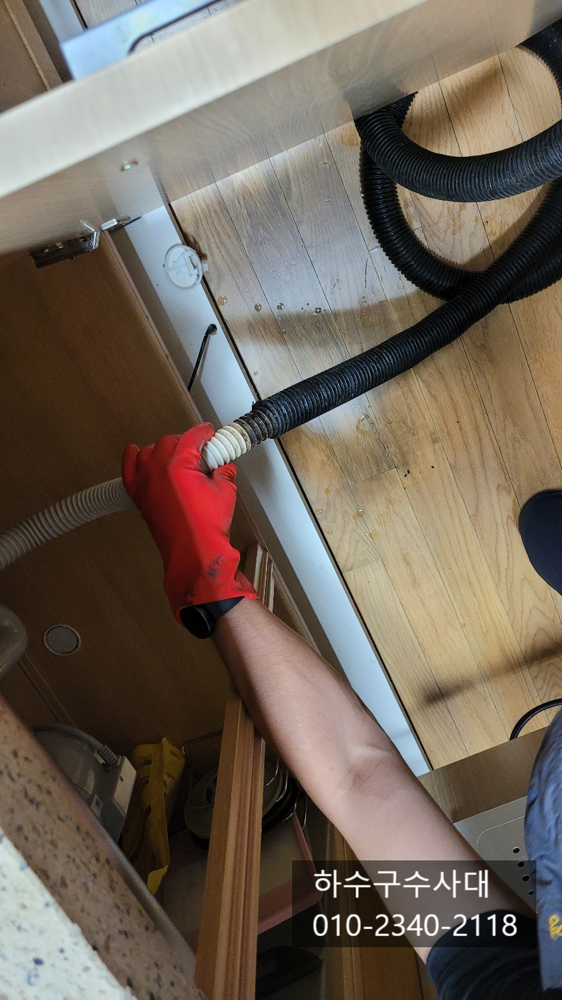
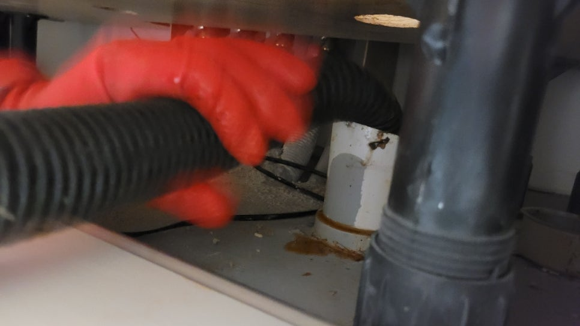
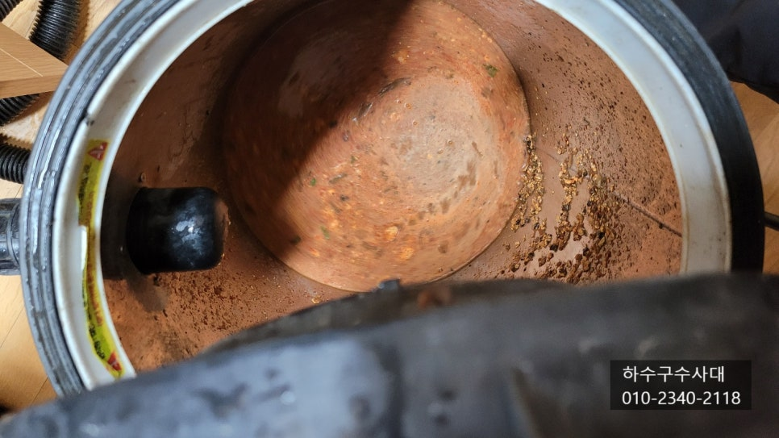
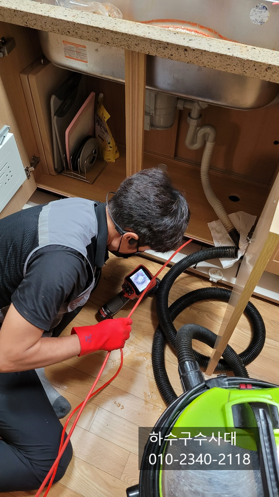

🏠 광교 싱크대막힘 영통구 하수구막힘
서울 싱크대막힘 전문 시공 후기

📋 작업 개요
- 위치: 서울
- 서비스 유형: 싱크대막힘, 하수구막힘, 배관막힘, 누수수리, 역류해결, 뚫는업체, 배관청소, 고압세척
- 작업 일시: 2021. 10. 6. 23:59
- 업체명: 하수구수사대 (010-5615-2118)
🔍 문제 상황
광교 싱크대막힘 영통구 하수구막힘
깨끗하고 완벽하게 해결해드립니다!!
오늘은 광교 싱크대막힘으로 고객께서
급하게 호출을 하셨어요.
저녁 식사준비를 하던중 싱크대물이
내려가지않아 음식준비를 할수가 없는상황이라
하수구수사대가 바로 출동하였습니다.
이렇게 싱크대물이 위에서 내려가지 않는
경우는 몇가지가 있는데 음식물거름망없이
내려보내면 호스를 통과하지 못하고 걸려
음식물이 막혀서 막히는 경우가 있고
배관에 기름슬러지가 오랜기간 쌓여
배관에서 막히는 경우도 있어요.
우선 위쪽에 있는 물을 석션장비로 제거후
배관상태도 파악하기로 하는 순서로 진행됩니다.
고객님께서 바닥이 마루인데 검게 썩어가는현상이
있는데 물이 새어나와서 그런건지 궁금해 하시네요.
아무래도 싱크대주변은 설거지를 하면서 물이 튈수밖에
없는데 이러한 원이도 있지만 배관에서
막히면 물이 조금씩 새어나와 마루바닥이 흡수하는 경우
썩을수 있어요.
정상적으로 배관이 깨끗하고 뚫려있다면
물을 한바가지 받아서 내리고 다 내려가면
꼬르륵~하고 텅텅 빈소리?가 나게 되는데

🔎 원인 분석
💡 전문가 진단: 하수구수사대010-2340-2118
그렇지않고 배관에서 물이 조금이라도 새어나온다면
점검을 받아볼 필요가있어요.
우선 위쪽에 있는 음식물과 배관에 남아있을 물들을
모두 흡입하여 배관상태를 확인해줘야해요.
덩어리진 기름슬러지가 보이는것을
보니 배관상태가 좋지 않을거 같았어요.
내시경카메라를 통해 자세히 상태를
파악하고 배관상태에 따른 작업을 진행하기로
하였습니다.
내시경으로 배관을 들여다보니 배관에
기름덩어리로 가득차 있는것을 확인하였습니다.
고객님께서 아파트입주때부터 5년가량 거주하셨는데
배관관리는 전혀 하지 않으셨답니다.
보통 배관 구배가 좋고 길이가 짧다면
오랜기간써도 잘 막히진 않는데요.
요즘은 배관구조가 한두번은 꺽여있고 싱크대를
길게 빼다보니 배관도 길어져 기름진 성분이
미쳐 나가지 못하고 배관에 머물러
고체화 되는 집들이 많습니다.
특히 점점 기름진 음식을 선호하는 이유도 있긴해요.
상태가 나빠진지 꽤 오래되었을텐데
싱크대 호수가 깊게 배관에 닿듯이 있어
많은양의 물이 내려가지 않아
밖으로 크게 역류되진 않았던것으로

🔧 작업 과정
추측이 됩니다.
배관에 기름찌거꺼기가 가득하게 때문에
기본적으로 뚫는 작업보다는
배관세척을 하는게 맞습니다.
고객님께서도 단순하게 막혔을줄 알았는데
배관내부 상태를 보시고는 이정도 일줄은
몰랐다고 하시네요.
플렉스샤프트라장비는 싱크대배관작업에
최적화 되어 있는데요 배관내시경으로
배관길이와 상태를 보면서 배관청소를 진행합니다.
집집마다 배관길이와 구조가 다르기때문에
내시경카메라는 필수입니다^^
고객님집의 싱크대배관은 한번엘보로 꺽여서
나가는 구조로 되어있네요.
배관세척장비 앞에 체인이 회전을하면서
기름덩어리를 제거해 나가는 방식입니다.
배관에 기름덩어리가 쌓이게 되면
심한 악취도 올라오게 되는데 오랜기간
배관청소를 하지않으면 하부장에서
심한 악취가 나기도 하니 냄새가 난다면
배관점검을 받아보시는것도 좋습니다.
배관이막혀 물이 바닥으로 새어나오면
밑에집에 누수도 생길수 있기때문에
신경써야할 부분이에요.
하수구수사대
010-2340-2118
반복적으로 작업을 진행하여
배관속에 있는 음식물덩어리를 모두
털어내어 내시경카메라를 보면서 깨끗해진
배관을 만들어 드리기 때문에
관리하시면서 쓰시면 평생 막힐일이 없습니다^^
고객님께서도 작업상황도 보시고
카메라로 깨끗해진 배관상태를
보시고 앞으로 관리를 신경써서 해야겠다고
하시네요.
배관도 깨끗해졌으니 싱크대에
물을 받아 내려보는 테스트를 해봅니다.
정상적으로 깨끗한 배관이라면
물이 다 내려가는 순간 꼬르륵~~하면서


✅ 작업 완료
배관이 비어 있는 소리가 들리게 됩니다.
작업을 완료하면 배수테스트와
호스연결부위에서 물이 새진않는지
꼼꼼히 확인후 철수합니다^^
혹시나 싱크대에서 악취가 나거나 물을
받아서 내릴때 배관쪽에서 물이 새어나온다면
꼭 점검 받아보시길 추천해드립니다.
하수구수사대는
서울,경기,인천 전지역 출장가능하오니
언제든지 연락주세요




⚠️ 베란다 누수 및 방수 관리 방법
- ✅ 비가 많이 올 때 창틀 주변이나 아래층 천장에 얼룩이 생기는지 정기적으로 확인해 보세요.
- ✅ 우수관 주변 실리콘 마감이 들뜨거나 깨진 틈새가 있는지 손상 여부를 수시로 체크하세요.
- ✅ 베란다 바닥 타일의 줄눈(메지)이 소실되면 그 틈으로 물이 침투하여 누수가 유발됩니다.
- ✅ 누수 의심 증상 발견 시 방치하면 아래층 손실이 커지므로 즉시 전문가의 진단을 받으십시오.
💡 핵심 정리
- 확실한 장비 작업(내시경 점검 및 샤프트 스케일링)으로 원인을 뿌리 뽑습니다.
- 작업 후 1년 이내에 동일한 부위 재발 시 100% 무상 A/S 서비스를 보장합니다.
- 서울 · 경기 · 인천 전 지역에 24시간 언제든 긴급 출동할 수 있도록 항시 대기 중입니다.
❓ 자주 묻는 질문 (FAQ)
🚨 서울 싱크대막힘 문제로 고민이신가요?
정확한 원인 진단과 확실한 시공으로 재발 없는 해결을 약속드립니다.
24시간 긴급 출동 | 서울 · 경기 · 인천 전지역 | 1년 내 재발 시 무상 A/S